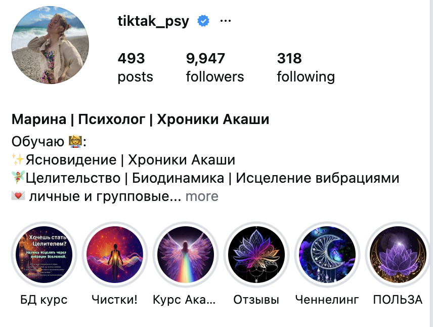

Ты психолог и хочешь усилить раппорт с клиентом, читать клиента, как открытую книгу, эффективно и быстро помогать клиентам исцеляться
Ясновидение:
авторский вводный урок,
- - что такое Хроники Акаши,
- - как они работают и
- - есть ли у вас способности к ясновидению
🎁 Бонус-практика уже в вводном уроке
Вводное видео-урок для тех, кто:
- · чувствует в себе больше, чем может объяснить логикой
- · хочет понять свои способности
- · и узнать, подходит ли ему путь считывания информации через Хроники Акаши
Что даст вам этот вводный урок
1. Поймете основу
Что такое Хроники Акаши, как они работают и почему это не просто красивая эзотерическая идея
2. Увидите, подходит ли вам это направление
Вы сможете честно соотнести эту тему с собой и своими ощущениями
3. Сможете распознать признаки способностей
Узнаете, как могут проявляться ясновидение, яснознание, ясночувствование и другие каналы восприятия
4. Поймете, можно ли это развивать
Разберетесь, что является даром от природы, а что можно раскрыть через практику
5. Увидите возможности для повышения своего уровня жизни
Для личного пути, внутренней трансформации или будущей практики помощи другим
Хроники Акаши для тебя, если
Ты таролог, нумеролог, кармолог, энергопрактик, и тебе стало тесно в одном инструменте, ты хочешь получить расширенные знания и мощные инструменты
Хочешь раскрыть и прокачать свой дар ясновидения, яснослышания, ясночувствования, яснознания
Ты особенный, так было всегда, чувствуешь и знаешь о своей силе, но не умеешь ей управлять
Хочешь научиться считывать информацию напрямую из информационного поля, чтобы помогать людям
Ты человек помогающих профессий и хочешь более эффективно исцелять людей, считывая их и обладая мощными инструментами исцеления
ОБО МНЕ
МАРИНА ЕМЦОВА
Психолог, проводник проводников, основатель Школы Целителей Души
- ✷ Помогаю людям принять свой Дар, раскрыть способности и научиться использовать их в жизни
- ✷ Прошла путь от прагматика-материалиста до раскрытия в себе дара ясновидения и целительства
- ✷ Работаю с теми, кто чувствует, что мир намного шире привычного, и хочет понять свои способности
- ✷ Соединила в своём подходе психологию, душу и исцеление, потому что их невозможно разделить
- ✷ Уже более +250 учеников курса нашли свой дар, раскрыли своё призвание и начали жить в согласии со своей природой
Вопрос-Ответ
• У вас есть интерес к сфере эзотерики, вас туда прям тянет, как магнитом — значит способности есть и они хотят проявиться.
• Вы психолог или человек помогающих профессий — точно есть, вас не зря потянуло помогать людям, просто способности могут быть заблокированы или раскрыты не полностью.
• Вы эмпат — вы можете почувствовать чувства, эмоции, проблемы или состояния других людей, умеете сопереживать.
• В жизни вы сталкиваетесь с разного рода неизведанным или сверхъестественным, сущностями, духами, видите вещие сны или предчувствуете события.

Конечно, все отзывы можно посмотреть в моем Инстаграме.
https://www.instagram.com/tiktak_psy/Да, конечно, вы научитесь заходить в хроники уже на первом уроке
Это развивается через практику, чувствительность, настройку на себя и правильную технику. В видео я объясняю базовые шаги, с которых можно начать.